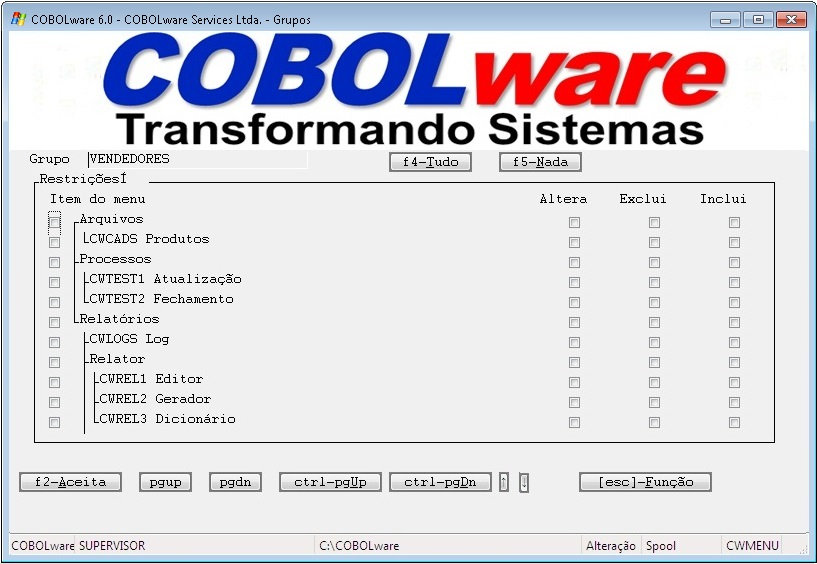
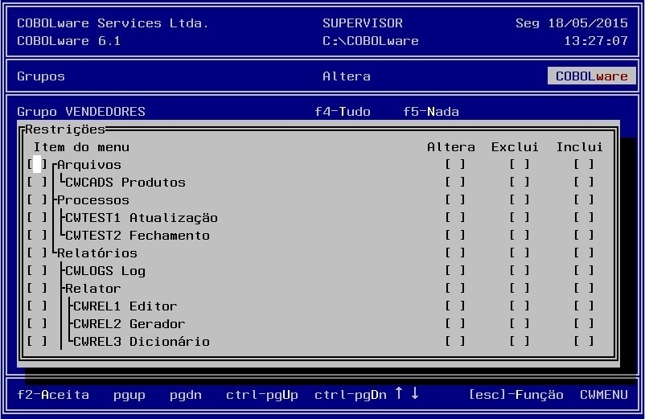

Manutenção da tabela de grupos de usuários.
Na
criação dinâmica de menus
em função da tabela de
programas, serão exibidas somente as opções
cujas funções estejam autorizadas no grupo ao qual
pertença o usuário
logado.
|
Modo gráfico |
|
 |
|
Modo texto |
|
 |
Grupo
Identificação do grupo para associação com usuários.
Item do menu
Um mapa da tabela de programas que
permite Inibir a exibição do programa no menu
para os usuários do grupo.
Pode ser um nome de programa, um número de página
de menu (marcada por dois pontos), nome de um job (marcado por uma
barra) ou código de relatório gerado pelo relator
(marcado com asterisco).
Acesso
Inibe ou habilita a exibição do programa no menu para os usuários do grupo.
Alteração
Desabilita a função de alteração no comando Option para os usuários do grupo.
Exclusão
Desabilita a função de exclusão no comando Option para os usuários do grupo.
Inclusão
Desabilita a função de inclusão no comando Option para os usuários do grupo.